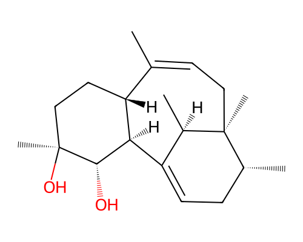

Recorded genus · Neocucurbitaria
Follow source profiles to their compounds, recorded activities and original evidence.
Sources / Fungi / Recorded genus
Classification follows stored source-name assignments; original identification and evidence states are retained. Activity counts cover associated compounds and do not establish taxon-specific activity.
Browse these source cardsConnection network
Click a node to expand its connections. Drag nodes to arrange the view.
Neocucurbitaria
Only the current neighbourhood is shown. Search or use Next to find other nodes. Shared products have one node and multiple source links. Mixed recorded source labels can occur under more than one genus.
Browse the same connections as lists
1 Recorded genus
2 Source / strain
Select a genus
Sources in this classification appear here.
3 Products
Select a source
See the products and their stored structures.
Select a product to view recorded activity, experimental systems and original evidence.
Lines show stored associations. Node distance does not represent similarity or evidence strength. Product activities are compound-level records; they are not automatically attributable to the selected strain or taxon. Target annotations do not establish direct binding. Original review states and restrictions are retained.
Source profiles
| Source / strain | Recorded genus | Compounds | Source evidence records |
|---|---|---|---|
| Neocucurbitaria unguis-hominis FS685 | Neocucurbitaria | 9 | 9 checked |
Associated compounds
| Structure | Compound | Formula | Classification | Activity records | Admitted evidence rows |
|---|---|---|---|---|---|
 Structure image unavailable Structure image unavailable | Neocucurbin AConnections → | C20H30O5 | Terpenoid | 10 | 9 |
 Structure image unavailable Structure image unavailable | Neocucurbol AConnections → | C20H28O4 | Terpenoid | 4 | 4 |
 Structure image unavailable Structure image unavailable | Neocucurbol BConnections → | C20H28O4 | Terpenoid | 4 | 4 |
 Structure image unavailable Structure image unavailable | Neocucurbol CConnections → | C20H28O4 | Terpenoid | 4 | 4 |
 Structure image unavailable Structure image unavailable | Neocucurbol DConnections → | C20H28O3 | Terpenoid | 4 | 4 |
 Structure image unavailable | Neocucurbol EConnections → | C20H32O2 | Terpenoid | 4 | 4 |
 Structure image unavailable Structure image unavailable | Neocucurbol FConnections → | C20H34O3 | Terpenoid | 4 | 4 |
 Structure image unavailable Structure image unavailable | Neocucurbol GConnections → | C20H32O2 | Terpenoid | 4 | 4 |
 Structure image unavailable Structure image unavailable | Neocucurbol HConnections → | C20H32O3 | Terpenoid | 4 | 4 |
Product activities & evidence
Up to two results per compound are shown. Open the compound record for all results, conditions and restrictions.
Preview selection
Shared cited references are prioritized where available. A shared reference does not establish a strain-specific assay or the same experimental sample.
| Product | Recorded results | Result evidence |
|---|---|---|
| Neocucurbin A | SF268 qualitative activity · 100 μM测试浓度下无活性（SRB；原文定性结果，未报告IC50） Evidence detailsPrimary result checkedShared cited reference; experimental attribution unconfirmed MCF7 qualitative activity · 100 μM测试浓度下无活性（SRB；原文定性结果，未报告IC50） Evidence detailsPrimary result checkedShared cited reference; experimental attribution unconfirmed | |
| Neocucurbol A | SF-268 (CNS glioblastoma) IC50 > 10 μM Evidence detailsPrimary result checkedShared cited reference; experimental attribution unconfirmed MCF-7 (breast adenocarcinoma) IC50 > 10 μM Evidence detailsPrimary result checkedShared cited reference; experimental attribution unconfirmed | |
| Neocucurbol B | SF-268 (CNS glioblastoma) IC50 > 10 μM Evidence detailsPrimary result checkedShared cited reference; experimental attribution unconfirmed MCF-7 (breast adenocarcinoma) IC50 > 10 μM Evidence detailsPrimary result checkedShared cited reference; experimental attribution unconfirmed | |
| Neocucurbol C | SF-268 (CNS glioblastoma) IC50 > 10 μM Evidence detailsPrimary result checkedShared cited reference; experimental attribution unconfirmed MCF-7 (breast adenocarcinoma) IC50 > 10 μM Evidence detailsPrimary result checkedShared cited reference; experimental attribution unconfirmed | |
| Neocucurbol D | SF-268 (CNS glioblastoma) IC50 > 10 μM Evidence detailsPrimary result checkedShared cited reference; experimental attribution unconfirmed MCF-7 (breast adenocarcinoma) IC50 > 10 μM Evidence detailsPrimary result checkedShared cited reference; experimental attribution unconfirmed | |
| Neocucurbol E | SF-268 (CNS glioblastoma) IC50 > 10 μM Evidence detailsPrimary result checkedShared cited reference; experimental attribution unconfirmed MCF-7 (breast adenocarcinoma) IC50 > 10 μM Evidence detailsPrimary result checkedShared cited reference; experimental attribution unconfirmed | |
| Neocucurbol F | SF-268 (CNS glioblastoma) IC50 > 10 μM Evidence detailsPrimary result checkedShared cited reference; experimental attribution unconfirmed MCF-7 (breast adenocarcinoma) IC50 > 10 μM Evidence detailsPrimary result checkedShared cited reference; experimental attribution unconfirmed | |
| Neocucurbol G | SF-268 (CNS glioblastoma) IC50 > 10 μM Evidence detailsPrimary result checkedShared cited reference; experimental attribution unconfirmed MCF-7 (breast adenocarcinoma) IC50 > 10 μM Evidence detailsPrimary result checkedShared cited reference; experimental attribution unconfirmed | |
| Neocucurbol H | SF-268 (CNS glioblastoma) IC50 > 10 μM Evidence detailsPrimary result checkedShared cited reference; experimental attribution unconfirmed MCF-7 (breast adenocarcinoma) IC50 > 10 μM Evidence detailsPrimary result checkedShared cited reference; experimental attribution unconfirmed |
No records match this search.